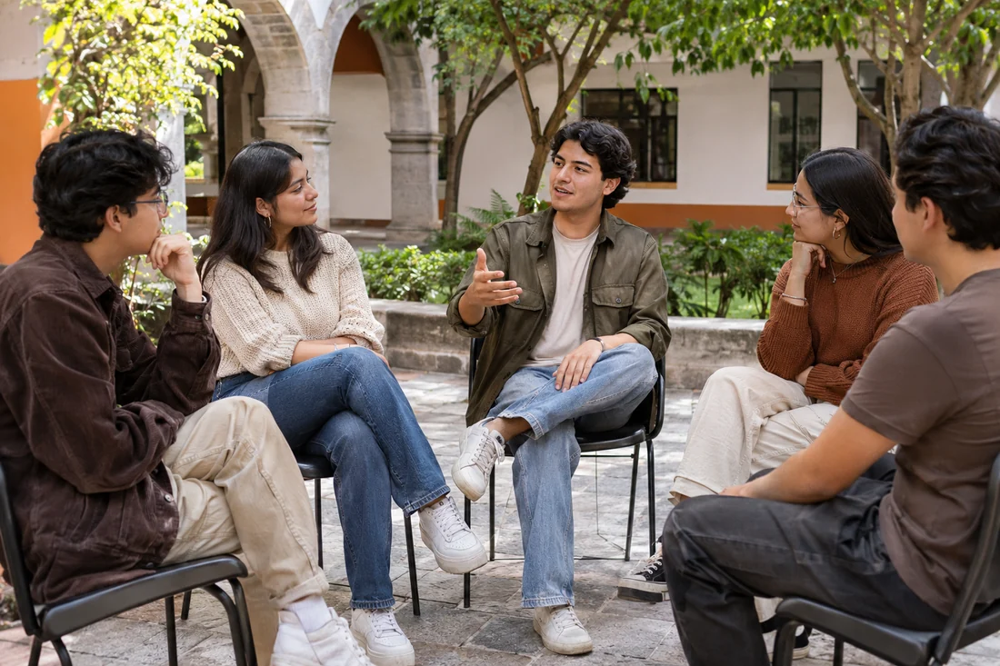
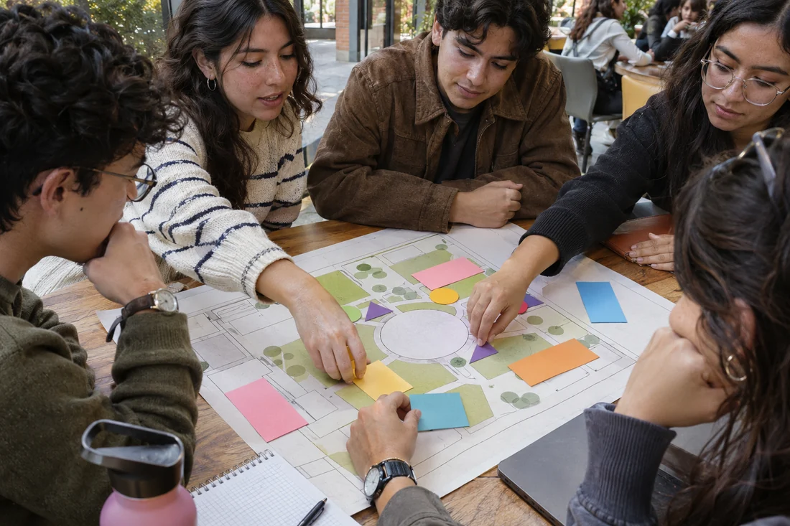
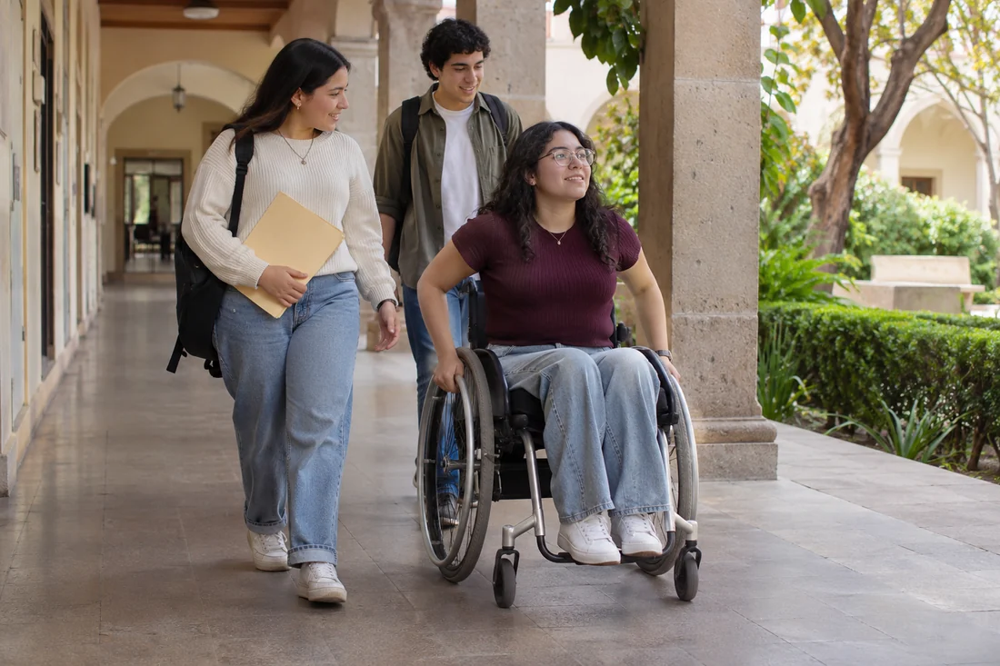

Ideas centrales
Cuando una decisión afecta a varias personas, poner sus razones en común permite identificar necesidades y acordar responsabilidades. El diálogo cumple esa función cuando cada participante puede aportar su experiencia y tiene la posibilidad de revisar su postura. En Pedagogía del oprimido, Paulo Freire vincula el diálogo con una tarea compartida de reflexión y acción. Reconocer que otra persona sabe algo que yo desconozco permite entender el problema desde una perspectiva más amplia y actuar sobre él (Freire, 1968/2022).
La interdependencia social aparece cuando lo que una persona logra depende también de las acciones de otras. Es positiva cuando avanzar hacia una meta compartida ayuda a cada integrante a alcanzar su objetivo. En el aprendizaje cooperativo, esta conexión se fortalece con responsabilidades individuales, apoyos entre compañeros y una revisión de cómo trabajó el grupo. Así, cada aporte incide en el resultado y cada persona puede dar cuenta de su parte (Johnson & Johnson, 2009).
La UNESCO relaciona el diálogo entre culturas y la cooperación con la convivencia pacífica. Su declaración sobre diversidad cultural vincula el pluralismo con políticas que hagan posible la participación de personas con identidades diversas (Organización de las Naciones Unidas para la Educación, la Ciencia y la Cultura [UNESCO], 2001, art. 2). En un grupo, esto se traduce en consultar a quienes vivirán las consecuencias de una decisión y explicar cómo se tuvieron en cuenta sus propuestas.
El material del módulo retoma a Martin Buber y Emmanuel Levinas para destacar la dignidad de quien participa en el diálogo. También invita a evaluar los acuerdos a la luz de los deberes y del bien común. Un equipo puede acordar dónde colocar las mesas de una feria, pero su decisión debe tener en cuenta el acceso de todas las personas que usarán el espacio (Universidad Tecmilenio, 2023a, subtema 13.1).
Ejemplo de aplicación
Un comité planea una feria estudiantil y propone ubicar las mesas en el pasillo principal. Una estudiante que usa silla de ruedas señala que la fila prevista bloquearía su ruta. El equipo consulta al personal de servicios y a quienes atenderán los puestos. Acuerdan trasladar la fila al patio cubierto, mantener el pasillo despejado y hacer un recorrido de prueba antes de abrir. Cada grupo asume una tarea y acuerdan a quién avisar si aparece un obstáculo. El diálogo permite descubrir una barrera y la interdependencia explica por qué la solución requiere coordinación entre participantes.
Por qué elegí este subtema
Elegí este subtema porque muchas decisiones de clase, trabajo y comunidad tienen consecuencias compartidas. Aprender a identificar quién puede aportar información y quién asumirá cada compromiso ayuda a decidir con criterios más justos. Practicarlo en un equipo permite corregir a tiempo decisiones que podrían excluir a alguien y construir acuerdos que las personas involucradas puedan sostener.
Galería del subtema


